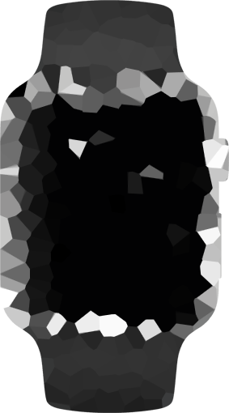

Vibration Sensor
Advanced vibration detection and monitoring system for real-time structural health assessment and predictive maintenance.
how it works
Our advanced vibration sensor system provides continuous monitoring with intelligent analytics for early detection of structural anomalies.
Install Sensor
Mount the vibration sensor on the structure or equipment you want to monitor. Easy installation with secure mounting options.
Configure System
Set up thresholds, alerts, and data collection intervals through our intuitive web interface or mobile app.
Monitor & Analyze
Receive real-time vibration data and intelligent alerts to prevent failures and optimize maintenance schedules.
The Benefits
Advanced vibration monitoring delivers precision, reliability, and actionable insights to protect your critical infrastructure.
Predictive Maintenance
Detect anomalies early to schedule maintenance before failures occur, reducing downtime and costs.
Structural Safety
Continuous monitoring ensures structural integrity and protects people, assets, and operations.
Data Security
Encrypted data transmission and secure cloud storage protect your sensitive monitoring data.
Smart Analytics
AI-powered analysis identifies patterns and trends for proactive decision-making.
Cost Efficiency
Reduce maintenance costs and extend equipment life with data-driven insights.
Industry Proven
Trusted technology deployed across bridges, buildings, tunnels, and industrial facilities.

High Precision
Capture minute vibrations with exceptional accuracy for comprehensive structural health monitoring.
Instant Alerts
Receive immediate notifications when vibration levels exceed configured thresholds.
Rugged Design
Weather-resistant construction ensures reliable operation in harsh environments.
Easy Integration
Seamlessly connects with existing monitoring systems and IoT platforms.
User Friendly
Intuitive dashboard provides clear visualization of vibration data and trends.
24/7 Monitoring
Continuous operation ensures you never miss critical events or anomalies.
tech specs
High-performance vibration sensor engineered for precision monitoring and long-term reliability.